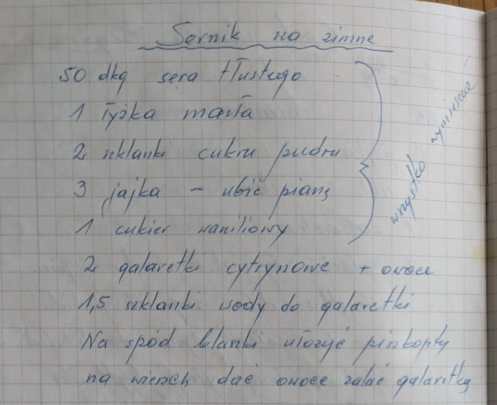
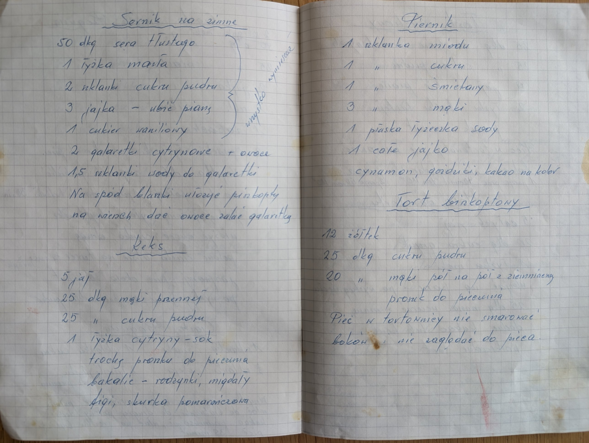

Sernik na zimno


Składniki
- 50 dkg sera tłustego
- 1 łyżka masła
- 2 szklanki cukru pudru
- 3 jajka
- 1 cukier waniliowy
- 2 galaretki cytrynowe
- 1,5 szklanki wody do galaretki
- owoce
- biszkopty
Przygotowanie
- Z jajek ubić pianę.
- Ser, masło, cukier puder, jajka i cukier waniliowy – wszystko wymieszać.
- Na spód blaszki ułożyć biszkopty.
- Na wierzch dać owoce, zalać galaretką.
Oryginalny zapis
Sernik na zimno 50 dkg sera tłustego ⎫ 1 łyżka masła ⎪ 2 szklanki cukru pudru ⎬ wszystko wymieszać 3 jajka – ubić pianę ⎪ 1 cukier waniliowy ⎭ 2 galaretki cytrynowe + owoce 1,5 szklanki wody do galaretki Na spód blaszki ułożyć biszkopty na wierzch dać owoce zalać galaretką